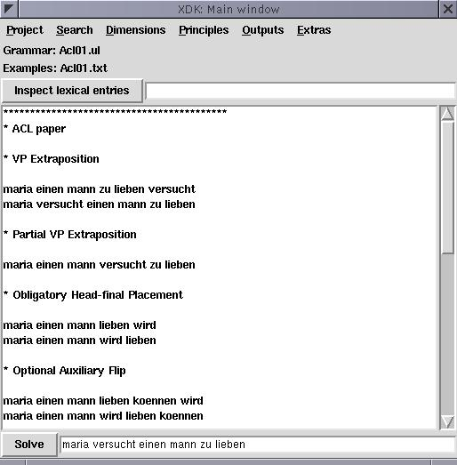
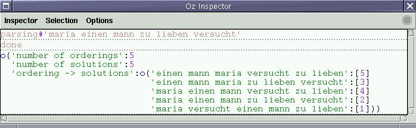
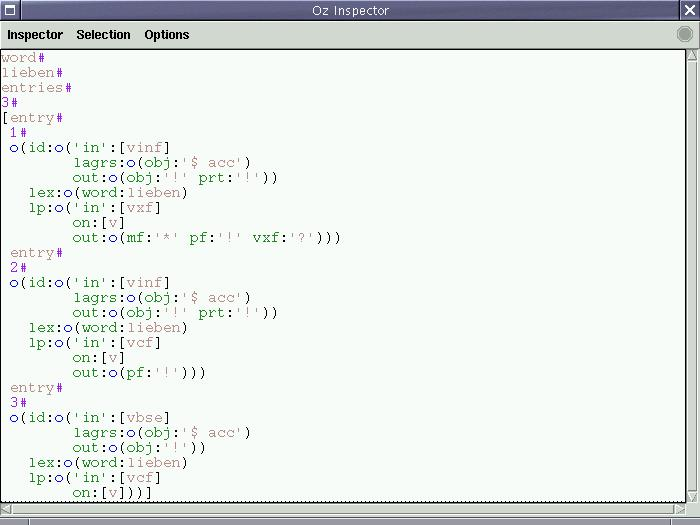

Next: Explorer window, Up: xdk
We show a screenshot of the main window of the GUI below:

The main window consists of five parts, from top to bottom:
The menu bar consists of the following pull-down menus, from left to right:
The Project menu consists of the following menu entries:
About...: Opens a dialog to display some information
about the XDK.
Open grammar file...: Opens a file dialog in which you
can select a grammar file which is then compiled. The GUI also tries
to find the corresponding example file with suffix txt.
Open grammar file/socket...: Opens a string dialog in which you
can select a grammar file or grammar socket
(e.g. 4712.xmlsocket). The GUI also tries to find the
corresponding example file with suffix txt.
Open multiple grammar files...: Opens a sequence
of file dialogs in which you can select multiple grammar files which
are then compiled and merged. Click on the Cancel button of the
file dialog after the last grammar file to break the sequence. The
GUI also tries to find the corresponding example file with suffix
txt (for the first grammar file in the sequence).
Reload grammar files: Recompiles the currently opened grammar
file(s) and reloads the corresponding examples file.
Save compiled grammar file...: Opens a file dialog in which
you can select a path and filename and then saves the compiled grammar
there.
Convert grammar file...: Opens two file dialogs in which you
can select the paths and filenames of the source and destination files
for grammar conversion. The grammar file language into which the
destination grammar file is converted depends on its suffix. The source
grammar file can be one of the following:
ul)
xml)
ilp)
ozf)
ul)
xml)
ilp)
Open examples file...: Opens an examples file which is then
displayed in the examples list view.
Reload examples file: Reloads the currently opened examples
file.
Close output windows: Calls the close method of all currently
used outputs
Quit: Quits the GUI.
The Search menu consists of the following menu entries:
First solution/All solutions/Print CSP/Print FlatZinc:
When solving, either search for the first solution only, enumerate all
solutions, print the CSP into a file, or print the CSP into a file
using FlatZinc syntax.
Explorer/IOzSeF/Oracle: Choose the search
exploration tool, either the Oz Explorer, IOzSeF or Oracle (also using
IOzSeF).
Set oracle port...: Set oracle socket port for communication
with the oracle server. Must be the same as set for the oracle server.
The Dimensions, Principles and Outputs menus are
different depending on the currently opened grammar. Here, you can
decide whether you wish to use or to switch off individual
dimensions2, principles and outputs.
The Extras menu consists of the following menu entries:
Print:
Here, you can specify how the output functors print
information:
inspect uses the Oz Inspector.
browse uses the
Oz Browser (useful for copying text to the clipboard, which the
Inspector cannot do).
stdout prints to stdout.
file prints into a file.
Compare lem solutions
Compares the derivation trees obtained from the generated XDG grammar
(by the XTAG grammar generator) with the derivation trees obtained
from the original XTAG lem parser. Counts the number of solutions and
then prints out those solutions unique to the lem parser and the XDK.
For this function to work, the executables of the lem parser
(ftp://ftp.cis.upenn.edu/pub/xtag/lem/lem-0.14.0.tgz) must be
installed in the search path. The executables runparser and
print_deriv are called. There are a couple of variants:
No filter does not use any tree filtering.
Simple filter uses a reimplementation of simple_filter.pl
from the lem parser from the lem parser distribution.
Tagger filter uses a reimplementation of tagger_filter.pl
to do tree filtering. For this, the mxpost tagger by Adwait
Ratnaparkhi must be installed in the directory denoted by the
environment variable MXPOST. In addition, for Tagger
filter, the LEM environment variable must point to the
location of the lem parser.
Generate orderings...: Uses the solver to search
for the possible orderings of a sentence.
Solve examples: Going downwards from the highlighted
example, solves each sentence from the list of examples. Can come in
handy for debugging grammars (answering the question whether all the
examples still work).
Solving Statistics:
Save solving statistics...: Opens a file dialog in which
you can select a path and a filename. Then obtains the solving
statistics for the current grammar and examples. The statistics are in
XML format (DTD: Extras/statistics.dtd). Unix users can use the
shell script diffnotime to compare two solving statistics
without taking the solving time into account (e.g. to spot the
differences with respect to solutions, choices and failures).
Set number of solutions...: Opens a dialog in which you can
set the maximum number of solutions for solving statistics. 0 means no
solving (can be used e.g. to do profiling only)
Set number of failures...: Opens a dialog in which you can
set the maximum number of failures for solving statistics.
Set recomputation distance...: Opens a dialog in which
you can set the maximum recomputation distance for solving statistics.
Open outputs: If checked, the used outputs are opened
for each solution in solving statistics.
Debug mode: If checked, the XDK is in
debug mode, giving out more information to ease (system, not grammar)
debugging.
Below, we display an example output of the Generate all
orderings... function:

'number of orderings' states the number of possible
orderings. 'number of solutions' states the number of solutions
(this can be higher than the number of possible orderings for
e.g. different analyses on a dimension other than lp).
'ordering -> solutions' states a mapping from sentences to
lists of indices of their corresponding solutions. By clicking on this
list with the right mouse button, and then selecting Actions
and then Outputs, you can invoke all used output functors for
the solutions contained in the list.
The Save solving statistics file... function omits empty
examples, examples starting with /, * or %.
The status display shows two things:
Grammar: the name of the currently
opened grammar file(s)
Examples: the name of the currently opened examples
file.
If the selected grammar file(s) could not be successfully compiled,
the Grammar status includes the note (not successfully
compiled).
In the inspect lexical entries text field you can enter a list
of words. After pressing the return key or after clicking on the
Inspect lexical entries button the GUI opens the Oz Inspector
to display all possible lexical entries for that word for the used
dimensions. The lexical entries are displayed in the Output
Language (OL).
If a lexical entry in the list equals another, e.g. the third is equal
to the first, then this is signified as follows: entry#3#'=1'.
Below, we show an example output of this function:

Here, the first number (3) corresponds to the number of lexical
entries for the word (lieben), and the numbers before each of
these lexical entries is the index of that entry.
The examples list view displays the list of currently opened examples. Use the scroll bar on the right hand side of the list view to scroll through it. If you click on one of the examples, the GUI copies this example to the solve text field. If you double click on one of the examples, the GUI first copies the example to the solve text field and then solves the example.
In the solve text field you can enter a list of words. After
pressing the return key or after clicking on the solve button
the GUI opens the Oz Explorer to display all possible solutions for
that list of words (under the currently opened grammar and selections
in the Dimensions and Principles menus).
When looking for example files which correspond to grammar files, the
GUI simply removes the suffix from the grammar file and adds the new
suffix txt. E.g. for the grammar file Grammars/Acl01.ul,
it looks for the examples file Grammars/Acl01.txt.
You can “tear-off” the pull-down menus such that they become independent windows (depends on the version of Tcl/Tk and your operating system, e.g. seems to work under Unix and Windows, but not MacOS X).
Some of the menu entries have keyboard shortcuts, displayed to their
right. E.g. by pressing the keys control and o
simultaneously, you can invoke the menu entry Open grammar
file... of the Project menu.